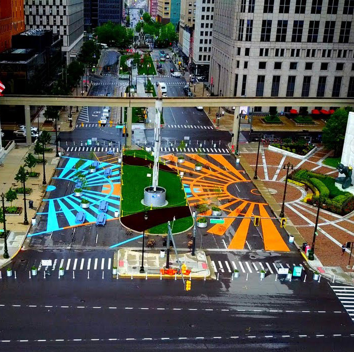
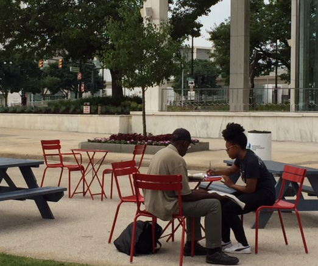
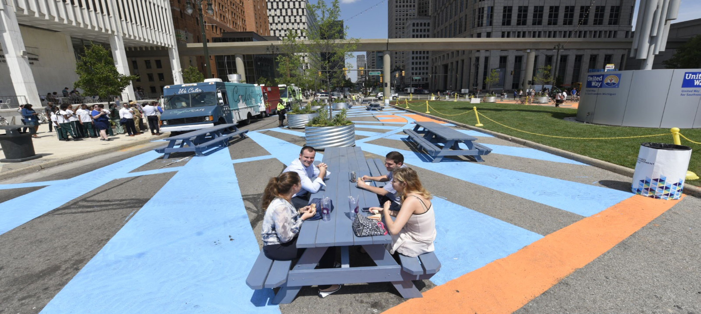
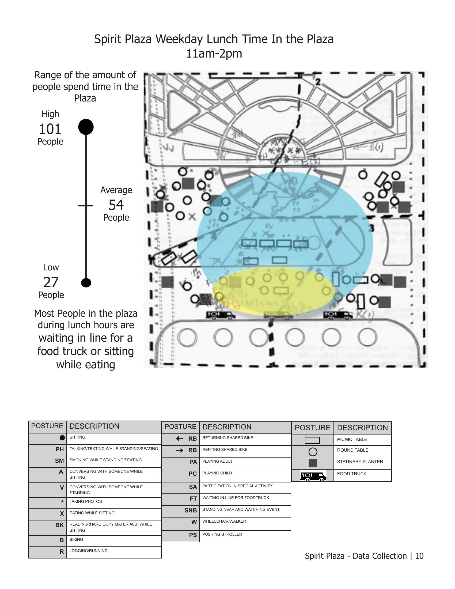
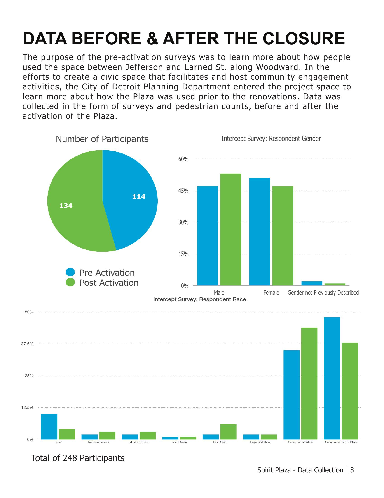

Spirit Plaza — A Public Space Pilot
Spirit Plaza was a pilot activation that closed a block of Woodward Avenue at the Spirit of Detroit statue, converting a downtown traffic corridor into a civic plaza. I joined the Planning & Development Department's data collection effort to evaluate how the space was used before and after activation, and to inform the city's decision on whether to make the plaza permanent.
My Role
I conducted intercept surveys with plaza users, completed weekday and weekend spatial-use mapping across morning, lunch, and afternoon time blocks, and contributed to the final data report submitted to PDD leadership.
Methods & Tools
Intercept surveys (pre- and post-activation) · Pedestrian counts · Behavioral mapping with posture coding (sitting, conversing, eating, photographing, food-truck queueing, etc.) · Quadrant-based site mapping · Demographic analysis · Comparative reporting
Findings from the Field
248
Survey respondents across pre- and post-activation phases
81%
Of respondents supported making Spirit Plaza permanent
~2x
Increase in Saturday pedestrian counts after activation
101
Peak weekday lunch-hour users observed in the plaza




Outcome
View Full Data Report — Spirit Plaza →
The data report contributed to the Planning & Development Department's evaluation of whether to make the pilot a permanent civic space. Findings demonstrated that the activation drew higher pedestrian counts and broad community support across age groups and residency status — including resident participation that grew post-activation.